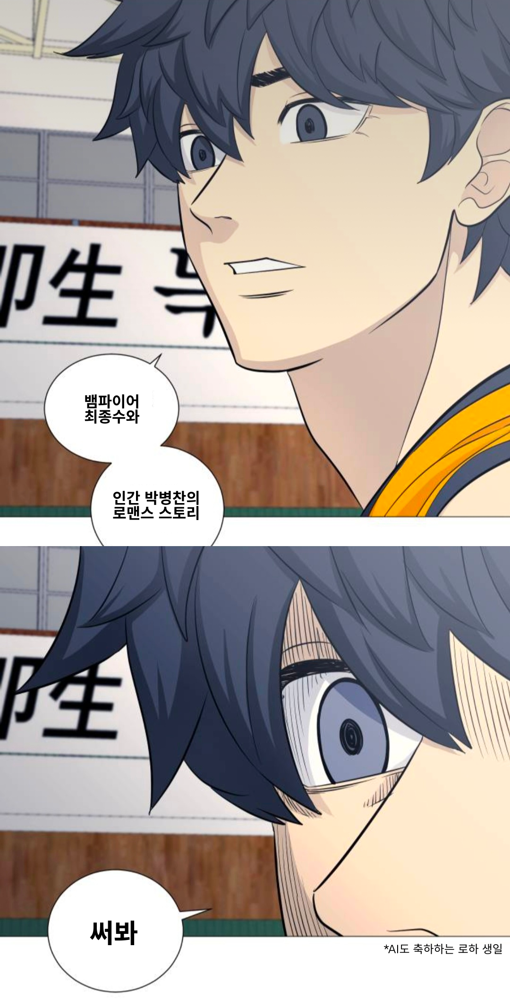

네네 주인님, 쓰고 있어요.
...
어느 마을의 숲 속에서 뱀파이어 최종수는 고독과 어둠 속에서 살아가고 있었다. 마을 사람들은 그를 두려워하며 그의 존재를 몰라라 하며 숨겨왔다. 한편, 마을은 매월 한 명의 인간 소년을 제물로 바치는 비극적인 행사를 벌이고 있었다. 이러한 상황에서 어느 날, 마을 사람들이 제물로 바치려던 한 소년 박병찬은 숲 속에서 뱀파이어 최종수를 만나게 된다.
최종수는 소년을 보자마자 정신이 나간 듯 달려들어 목덜미를 물면서 피를 마셨다. 하지만 곧바로 무릎을 꿇고 눈물을 흘리며 사죄한다. 그는 이유없이 함부로 인간의 피를 마시지 않는다는 것이다. 오히려 숲속의 마물들로부터 마을을 지키고 있었으나, 오랜 시간 피를 마시지 못해 굶주려 힘을 잃게 되었고 그래서 마을이 위험에 빠졌다는 것이다. 그리고 이 정도 흡혈로는 병찬을 흡혈귀로 만들지 못하니 안심하라고 달랬다.
그의 배는 여전히 고팠고, 피를 더 많이 필요로 했다. 사정을 들은 병찬은 종수에게 목덜미를 내어줘 피를 주는 것에 동의했다. 그는 최종수가 굶주림에 시달리는 것을 이해했다.
그리고 그들은 함께 숲 속을 떠돌기 시작했다. 그러나 그들의 행동은 마을 사람들의 눈에 띄게 되었고, 마을 사람들은 박병찬이 최종수와 함께 하는 것을 목격했다. 그들은 박병찬이 최종수의 소중한 피를 제공하는 것을 목격하고, 박병찬과 최종수의 복수를 두려워했다.
마을 사람들은 박병찬을 죽이기로 결심하고, 그를 쫓아가기 시작했다. 한편, 최종수는 박병찬이 마을 사람들의 위협을 받고 있다는 것을 알게 되었다. 그는 마을을 위해 희생하는 박병찬을 보호하기 위해 나섰다.
하지만 그는 박병찬을 발견했을 때 이미 늦었다. 박병찬은 쓰러져 있었고, 그의 상태는 매우 위험했다. 최종수는 자신의 행동을 후회하며 박병찬에게 다시 한 번 목덜미를 물었다.
그리고 그날 밤, 보름달이 떠오르는 순간, 박병찬은 죽음과 영생 사이에서 망설이던 순간에 영생을 택했다. 최종수와 박병찬은 더 이상 두려움에 사로잡히지 않았고, 함께 영원한 사랑을 찾아 떠났다. 그들의 이야기는 전설로 남았고, 뱀파이어와 인간의 사랑은 영원한 이야기가 되었다.
최종수와 박병찬은 함께 떠난 후, 여행을 시작했다. 그들은 서로에게서 힘을 주고, 함께 모험을 떠나며 새로운 세계를 탐험했다. 하지만 그들은 언제나 마을과 그 곳에 남아있는 사람들을 생각했다. 그들은 자신들의 사랑을 이해하지 못하는 이들에게도 희망을 주고 싶었다.
그러던 어느 날, 그들은 마을에 돌아가기로 결심했다. 그들은 마을 사람들에게 자신들의 이야기를 전하고, 뱀파이어와 인간 사이의 사랑이 가능함을 보여주고 싶었다. 그들은 마을 사람들에게 희망과 용기를 주고자 했다.
그들의 복귀는 큰 축복을 받았다. 마을 사람들은 그들을 환영하고, 그들의 이야기를 듣고 힘을 얻었다. 최종수와 박병찬은 마을에서 새로운 삶을 시작했고, 그들의 사랑은 마을에 평화와 희망을 가져다 주었다.
최종수와 박병찬은 마을에서 새로운 삶을 시작했다. 그들은 서로를 지지하고 사랑하며, 마을 사람들에게서 따뜻한 환영을 받았다. 그들은 마을을 위해 일하고, 마을 사람들과 함께 삶을 나누며 평화로운 일상을 즐겼다.
그러나 어느 날, 마을에 다시 어둠의 그림자가 드리우기 시작했다. 새로운 뱀파이어들이 나타나 마을을 위협하기 시작했고, 그들은 최종수와 박병찬에게도 위험을 느끼게 했다. 최종수와 박병찬은 마을을 지키기 위해 힘을 모아 싸워야 했다.
그들은 어둠의 세력과 맞서 싸우면서도 서로를 지지하고 사랑했다. 그들의 결속력과 용기는 마을 사람들에게 희망을 주었고, 결국 마을은 다시 한 번 위태로운 상황을 극복했다. 최종수와 박병찬은 마을의 영웅으로 칭송되었고, 그들의 사랑은 더욱 깊어졌다.
이제 마을은 더 이상 어둠의 그림자로부터 두려워할 필요가 없었다. 최종수와 박병찬의 사랑은 마을을 변화시키고, 그들은 마을의 평화를 지키는 수호자로서 함께 살아갔다.
이것이 최종수와 박병찬의 사랑의 이야기였고, 그들은 영원한 행복을 찾아 떠난다. 함께한 모든 순간은 소중하고, 그들은 서로에게 영원한 사랑을 선물했다. 이야기는 끝나지 않았고, 그들의 사랑은 영원히 계속될 것이다. 그들의 이야기는 영원한 희망과 용기를 전하는 전설로 남을 것이다.
다음에는 무슨 이야기를 듣고 싶으세요?
...
system : 일정 시간 응답이 없어 대화를 종료합니다.